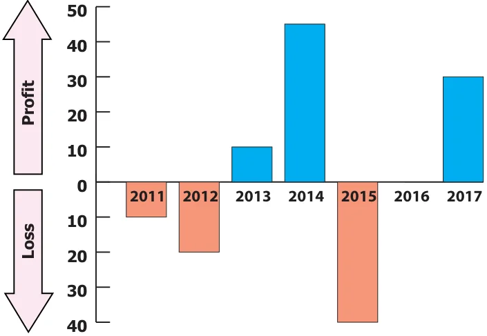

<!DOCTYPE html>
<html lang="en">
<head>
<meta charset="UTF-8">
<meta name="viewport" content="width=device-width,initial-scale=1">
<title>Exercise 2.2; Miscellaneous Practice Problems — Integers</title>
<meta name="description" content="Class 6 Mathematics · Term 3 · Integers · Exercise 2.2; Miscellaneous Practice Problems">
<link rel="icon" href="data:image/svg+xml,<svg xmlns='http://www.w3.org/2000/svg' viewBox='0 0 100 100'><text y='.9em' font-size='90'>📘</text></svg>">
<link rel="stylesheet" href="../../../assets/book.css">
<link rel="stylesheet" href="https://cdn.jsdelivr.net/npm/katex@0.16.11/dist/katex.min.css" crossorigin="anonymous">
</head>
<body>
<header class="topbar">
<div class="topbar-in">
  <div class="crumb">
    <span class="c1"><a href="../../../index.html">Library</a> · <a href="../../index.html">Class 6 Mathematics · Term 3</a></span>
    <span class="c2">Integers · Exercise 2.2; Miscellaneous Practice Problems</span>
  </div>
  <a class="tb-btn" data-nav="prev" href="../../02-integers/04-exercise-2.1/index.html" title="Exercise 2.1">←</a>
  <details class="drawer"><summary class="tb-btn" title="Sections in this chapter">☰</summary>
<div class="drawer-panel"><div class="dh">Integers</div><a href="../01-introduction-2.1/index.html">2.1 Introduction</a><a href="../02-introduction-of-integers-and-its-representation-on-a-numbe-2.2/index.html">2.2 Introduction of Integers and its representation on a number line</a><a href="../03-ordering-of-integers-2.3/index.html">2.3 Ordering of Integers</a><a href="../04-exercise-2.1/index.html">Exercise 2.1</a><a href="../05-exercise-2.2/index.html" aria-current="page">Exercise 2.2; Miscellaneous Practice Problems</a><a href="../06-summary/index.html">Summary</a></div></details>
  <a class="tb-btn" data-nav="next" href="../../02-integers/06-summary/index.html" title="Summary">→</a>
  <button class="tb-btn" data-theme-toggle title="Toggle light / dark" aria-label="Toggle light or dark theme">◐</button>
</div>
<div class="progress"><span style="width:37.0%"></span></div>
</header>
<main class="wrap">
<div class="sec-head">
  <p class="eyebrow"><a href="../index.html">Chapter 2 · Integers</a></p>
  <h1>Exercise 2.2; Miscellaneous Practice Problems</h1>
  <p class="sec-meta">Textbook pages 12–14 · 4 figures</p>
</div>
<article class="prose">
<ul class="qlist">
<li><span class="mk">11.</span><span class="lt">Arrange the following integers in descending order.</span></li>
<li><span class="mk">i)</span><span class="lt">14, 27, 15, \(- 14\), \(- 9\), 0, 11, \(- 17\)</span></li>
<li><span class="mk">ii)</span><span class="lt">\(- 99\), \(- 120\), 65, \(- 46\), 78, 400, \(- 600\)</span></li>
<li><span class="mk">iii)</span><span class="lt">111, \(- 222\), 333, \(- 444\), 555, \(- 666\), 7777, \(- 888\)</span></li>
</ul>
<p>Objective Type Questions</p>
<ul class="qlist">
<li><span class="mk">12.</span><span class="lt">There are __________ positive integers from \(- 5\) to 6.</span></li>
<li><span class="mk">a)</span><span class="lt">5 b) 6 c) 7 d) 11</span></li>
<li><span class="mk">13.</span><span class="lt">The opposite of 20 units to the left of 0 is</span></li>
<li><span class="mk">a)</span><span class="lt">20 b) 0 c) \(- 20\) d) 40</span></li>
<li><span class="mk">14.</span><span class="lt">One unit to the right of \(- 7\) is...........</span></li>
<li><span class="mk">a)</span><span class="lt">+1 b) \(- 8\) c) \(- 7\) d) \(- 6\)</span></li>
<li><span class="mk">15.</span><span class="lt">3 units to the left of 1 is</span></li>
<li><span class="mk">a)</span><span class="lt">\(- 4\) b) \(- 3\) c) \(- 2\) d) 3</span></li>
<li><span class="mk">16.</span><span class="lt">The number which determines marking the position of any number to its opposite on a</span></li>
</ul>
<p>number line is</p>
<ul class="qlist">
<li><span class="mk">a)</span><span class="lt">\(- 1\) b) 0 c) 1 d) 10</span></li>
</ul>
<h2 class="callout-h" id="s-exercise-2-2">Exercise 2.2</h2>
<h4 class="callout-h" id="s-miscellaneous-practice-problems">Miscellaneous Practice Problems</h4>
<ul class="qlist">
<li><span class="mk">1.</span><span class="lt">Write two different real life situations that represent the integer \(- 3\).</span></li>
<li><span class="mk">2.</span><span class="lt">Mark the following numbers on a number line</span></li>
<li><span class="mk">i)</span><span class="lt">All integers which are greater than \(- 7\) but less than 7.</span></li>
<li><span class="mk">ii)</span><span class="lt">The opposite of 3.</span></li>
<li><span class="mk">iii)</span><span class="lt">5 units to the left of \(- 1\).</span></li>
<li><span class="mk">3.</span><span class="lt">Construct a number line that shows the depth of 10 feet from the ground level and its</span></li>
</ul>
<p>opposite.</p>
<ul class="qlist">
<li><span class="mk">4.</span><span class="lt">Identify the integers and mark on the number line that are at a distance of 8 units from \(- 6\).</span></li>
<li><span class="mk">5.</span><span class="lt">Answer the following questions from the number line given below .</span></li>
</ul>
<h2 id="s-a-e-c-g-k-f-b-h-j-d-i">A E C G K F B H J D I</h2>
<h2 id="s-0">0</h2>
<ul class="qlist">
<li><span class="mk">i)</span><span class="lt">Which integer is greater : G or K ? Why ?</span></li>
<li><span class="mk">ii)</span><span class="lt">Find the integer that represents C.</span></li>
<li><span class="mk">iii)</span><span class="lt">How many integers are there between G and H?</span></li>
<li><span class="mk">iv)</span><span class="lt">Find the pairs of letters which are opposite of a number.</span></li>
<li><span class="mk">v)</span><span class="lt">Say True or False : 6 units to the left of D is \(- 6\).</span></li>
<li><span class="mk">6.</span><span class="lt">If G is 3 and C is \(- 1\), what numbers are A and K on the number line?</span></li>
</ul>
<ul class="qlist">
<li><span class="mk">7.</span><span class="lt">Find the integers that are 4 units to the left 0 and 2 units to the right of \(- 3\).</span></li>
</ul>
<p>Challenge Problems</p>
<figure class="fig side-fig"></figure>
<ul class="qlist">
<li><span class="mk">8.</span><span class="lt">Is there the smallest and the largest number in the set of integers?</span></li>
</ul>
<p>Give reason.</p>
<ul class="qlist">
<li><span class="mk">9.</span><span class="lt">Look at the Celsius Thermometer and answer the following questions:</span></li>
<li><span class="mk">i)</span><span class="lt">What is the temperature that is shown in the Thermometer?</span></li>
<li><span class="mk">ii)</span><span class="lt">Where will you mark the temperature 5 C below 0 C in the</span></li>
</ul>
<p>Thermometer?</p>
<ul class="qlist">
<li><span class="mk">iii)</span><span class="lt">What will be the temperature, if 10 C is reduced from the</span></li>
</ul>
<p>temperature shown in the Thermometer?</p>
<ul class="qlist">
<li><span class="mk">iv)</span><span class="lt">Mark the opposite of 15 C in the Thermometer.</span></li>
</ul>
<ul class="qlist">
<li><span class="mk">10.</span><span class="lt">P, Q, R and S are four different integers on a number line. From the following clues,</span></li>
</ul>
<p>find these integers and write them in ascending order.</p>
<ul class="qlist">
<li><span class="mk">i)</span><span class="lt">S is the least of the given integers.</span></li>
<li><span class="mk">ii)</span><span class="lt">R is the smallest positive integer.</span></li>
<li><span class="mk">iii)</span><span class="lt">The integers P and S are at the same distance from 0.</span></li>
<li><span class="mk">iv)</span><span class="lt">Q is 2 units to the left of integer R.</span></li>
<li><span class="mk">11.</span><span class="lt">Assuming that the home to be the starting point, mark the following places in order on</span></li>
</ul>
<p>the number line as per instructions given below and write their corresponding integers.</p>
<figure class="fig wide"></figure>
<p>-7 -6 -5 -4 -3 -2 -1</p>
<p>Places: Home, School, Library, Playground, Park, Departmental Store, Bus Stand, Railway Station, Post Office, Electricity Board.</p>
<p>Instructions:</p>
<ul class="qlist">
<li><span class="mk">i)</span><span class="lt">Bus Stand is 3 units to the right of Home.</span></li>
<li><span class="mk">ii)</span><span class="lt">Library is 2 units to the left of Home.</span></li>
<li><span class="mk">iii)</span><span class="lt">Departmental Store is 6 units to the left of Home.</span></li>
<li><span class="mk">iv)</span><span class="lt">Post Office is 1 unit to the right of the Library.</span></li>
<li><span class="mk">v)</span><span class="lt">Park is 1 unit right of Departmental Store.</span></li>
<li><span class="mk">vi)</span><span class="lt">Railway Station is 3 units left of Post Office.</span></li>
<li><span class="mk">vii)</span><span class="lt">Bus Stand is 8 units to the right of Railway Station.</span></li>
<li><span class="mk">viii)</span><span class="lt">School is next to the right of Bus Stand.</span></li>
<li><span class="mk">ix)</span><span class="lt">Playground and Library are opposite to each other.</span></li>
<li><span class="mk">x)</span><span class="lt">Electricity Board and Departmental Store are at equal distance from Home.</span></li>
<li><span class="mk">12.</span><span class="lt">Complete the table using the following hints:</span></li>
</ul>
<figure class="fig side-fig"></figure>
<p>C1: the first non-negative integer. C3: the opposite to the second negative integer. C5: the additive identity in whole numbers. C6: the successor of the integer in C2. C8: the predecessor of the integer in C7. C9: the opposite to the integer in C5.</p>
<ul class="qlist">
<li><span class="mk">13.</span><span class="lt">The following bar graph shows the profit (+) and loss ( - ) of a small scale company</span></li>
</ul>
<p>(in crores) between the years 2011 to 2017.</p>
<figure class="fig"></figure>
<ul class="qlist">
<li><span class="mk">i)</span><span class="lt">Write the integer that represents a profit or a loss for the company in 2014?</span></li>
<li><span class="mk">ii)</span><span class="lt">Denote by an integer on the profit or loss in 2016.</span></li>
<li><span class="mk">iii)</span><span class="lt">Denote by integers on the loss for the company in 2011 and 2012.</span></li>
<li><span class="mk">iv)</span><span class="lt">Say True or False: The loss is minimum in 2012.</span></li>
<li><span class="mk">v)</span><span class="lt">Fill in: The amount of loss in 2011 is _______ as profit in 2013.</span></li>
</ul>
</article>
<nav class="pager"><a class="" data-nav="prev" href="../../02-integers/04-exercise-2.1/index.html"><span class="dir">← Previous</span><span class="t">Exercise 2.1</span><span class="ch">Integers</span></a><a class="nx" data-nav="next" href="../../02-integers/06-summary/index.html"><span class="dir">Next →</span><span class="t">Summary</span><span class="ch">Integers</span></a></nav>
</main><footer class="site">Generated from the source textbook PDFs · text, figures and exercises belong to their respective publishers.</footer><script defer src="https://cdn.jsdelivr.net/npm/katex@0.16.11/dist/katex.min.js" crossorigin="anonymous"></script>
<script defer src="https://cdn.jsdelivr.net/npm/katex@0.16.11/dist/contrib/auto-render.min.js" crossorigin="anonymous"
  onload="renderMathInElement(document.body,{delimiters:[
    {left:'\\(',right:'\\)',display:false},
    {left:'$$',right:'$$',display:true},
    {left:'\\[',right:'\\]',display:true}],throwOnError:false,ignoredTags:['script','noscript','style','textarea','pre','code']})"></script>
<script src="../../../assets/book.js"></script>
<script defer src="../../../../assets/search.js"></script>
</body>
</html>
